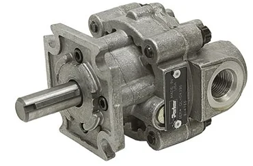

Por que comparar tecnologias de acionamento?
Motores são dispositivos fundamentais na engenharia porque convertem energia em movimento mecânico rotativo. Embora os motores elétricos sejam os mais comuns em muitas aplicações industriais, motores hidráulicos e pneumáticos continuam essenciais em cenários específicos.
A escolha entre essas tecnologias depende do ambiente, da energia disponível, do nível de torque, da precisão de controle, do custo de operação e das condições de segurança.
Motores hidráulicos
Motores hidráulicos funcionam a partir da energia de um fluido pressurizado, normalmente óleo hidráulico. Esse fluido entra no motor e atua sobre elementos mecânicos internos, gerando força e rotação no eixo.
Em termos práticos, o motor hidráulico transforma energia hidráulica em energia mecânica. Por trabalhar com fluido incompressível e alta pressão, ele consegue entregar muito torque em um volume relativamente compacto.

Princípio de funcionamento hidráulico
O fluido sob alta pressão entra em uma câmara interna e exerce força sobre componentes móveis. Esses componentes podem ser engrenagens, palhetas ou pistões. A força gerada pelo fluido provoca a rotação do eixo.
Entre os principais tipos de motores hidráulicos estão os motores de engrenagens, conhecidos pela simplicidade e robustez; os motores de palhetas, com operação mais suave; e os motores de pistões, que podem alcançar maior eficiência.
Aplicações dos motores hidráulicos
Motores hidráulicos são comuns em máquinas pesadas, escavadeiras, tratores, equipamentos de mineração, sistemas móveis e processos que exigem alta força em espaço reduzido.
Eles são especialmente úteis quando o equipamento já possui circuito hidráulico. Nesses casos, integrar um motor hidráulico pode ser mais natural do que adicionar outro tipo de acionamento.
Vantagens e limitações dos motores hidráulicos
As principais vantagens são operação em ambientes severos, partida sob carga, alto torque em tamanho reduzido e capacidade de sustentar cargas em determinadas configurações.
As limitações estão ligadas ao custo inicial, necessidade de bombas, válvulas, tubulações, manutenção do fluido, risco de vazamentos e ruído operacional.
Motores pneumáticos
Motores pneumáticos operam de modo semelhante aos hidráulicos, mas utilizam ar comprimido como fonte de energia. O ar é direcionado para uma câmara interna, onde empurra elementos rotativos conectados ao eixo.
Eles podem usar palhetas, pistões ou turbinas, dependendo da aplicação. Em geral, são escolhidos quando há rede de ar comprimido disponível e quando leveza, simplicidade e segurança contra faíscas são fatores importantes.
Aplicações dos motores pneumáticos
Motores pneumáticos são muito usados em ferramentas portáteis, como furadeiras, lixadeiras e parafusadeiras industriais. Também aparecem em equipamentos odontológicos, sistemas de alta rotação e ambientes onde a operação limpa ou sem faíscas é desejável.
Vantagens e limitações dos motores pneumáticos
Entre as vantagens estão ausência de superaquecimento típico de motores elétricos, baixa geração de faíscas, boa relação potência/peso e operação em ampla faixa de temperatura.
Entre as limitações estão o custo operacional do ar comprimido, a dependência de uma rede pneumática estável e o controle de velocidade menos preciso quando comparado a soluções elétricas.
Comparação com motores elétricos
Motores elétricos são amplamente usados pela facilidade de controle, menor manutenção e integração com sistemas de automação. Com inversores de frequência, conseguem ajustar velocidade e torque com boa precisão.
Motores hidráulicos se destacam quando a aplicação exige alto torque e robustez. Motores pneumáticos se destacam em ferramentas leves, operação sem faíscas e ambientes com rede de ar comprimido já disponível.
Exemplo prático: ferramenta em ambiente explosivo
Imagine uma indústria que precisa escolher uma lixadeira portátil para um ambiente com presença de gases inflamáveis. Um motor elétrico pode gerar faíscas e também aquecer durante uso contínuo, tornando a solução menos adequada.
Um motor hidráulico seria seguro, mas tende a ser pesado e exigiria um sistema mais complexo para uma ferramenta portátil. Nesse cenário, o motor pneumático se torna a melhor escolha, pois não gera faíscas, não sofre superaquecimento da mesma forma e mantém boa relação entre peso e potência.
Como escolher
Não existe uma solução universal. A escolha deve considerar a aplicação específica, o ambiente de operação, os requisitos de torque e velocidade, o custo inicial, o custo operacional e a infraestrutura disponível.
Em engenharia, a melhor tecnologia é aquela que atende ao processo com segurança, eficiência, confiabilidade e custo compatível.